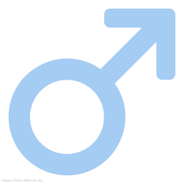
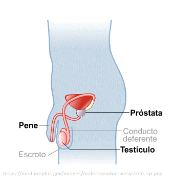
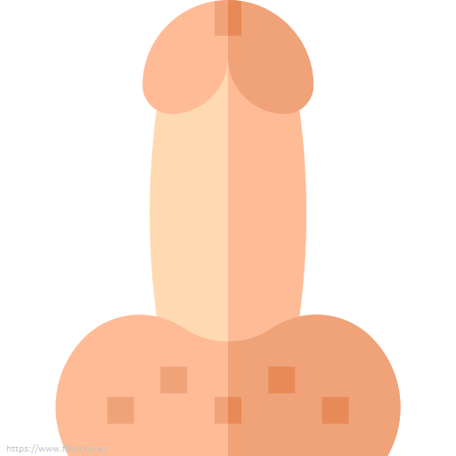
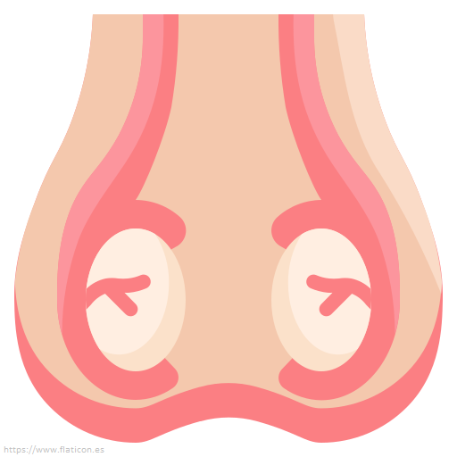
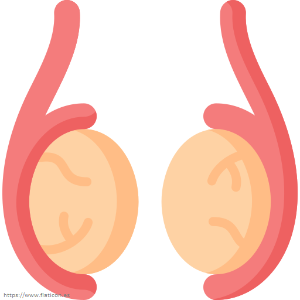

Los órganos sexuales masculinos están constituidos por una compleja disposición
de
órganos genitales internos y externos. Su función es la reproducción y el placer sexual.
El
sistema reproductor masculino, también conocido como el aparato
reproductor
masculino, es el responsable de la reproducción, es decir: la producción de
gametos para la fecundación del óvulo (huevo o gameto) de la mujer. De
manera
similar a otros sistemas del cuerpo humano, el sistema reproductor masculino está
constituido por órganos, pero además, también de algunas glándulas y
conductos.
Los órganos genitales masculinos comprenden:
Órganos genitales externos (colectivamente = vulva)

Órganos genitales internos
- Conductos deferentes
- Vesículas seminales
- Conductos eyaculadores
Organos Genitales Externos
Pene

El pene es el órgano de la copulación en el hombre. Sirve de salida
común
para la
orina y el semen o líquido seminal. Consiste en un cuerpo y una raíz. En la
punta
del
pene,
el cuerpo esponjoso forma el glande que cubre los extremos libres de
los
cuerpos
cavernosos. Cerca del extremo final del glande se encuentra el orificio de
la uretra
esponjosa u orificio externo de la uretra.
Escroto

El escroto es un saco cutáneo exterior que contiene los testículos
y
está
situado posteroinferiormente en relación al pene e inferiormente en relación a
la
sínfisis
del pubis, En respuesta a las bajas temperaturas el músculo dartos
se
contrae con lo que se arruga la piel del escroto y se reduce la
pérdida de
calor y el músculo cremáster en cada lado también se contrae con
lo
que
los
testículos son acercados al cuerpo para estar cerca del calor corporal.
Testículos

Los testículos son dos glándulas ovoides, una a cada lado del
pene,
que
están
suspendidas dentro del escroto por el cordón espermático. Producen
las
células
germinale masculinas o espermatozoides y las hormonas
sexuales
masculinas o andrógenos. En el interior de cada testículo, los
espermatozoides
se forman en varios cientos de túbulos seminíferos que se unen para
formar
una
red de
canales que recibe el nombre de rete testis. Pequeños
conductos
conectan la rete testis con el epidídimo. Los túbulos seminíferos
contienen
dos
tipos
de células, las células espermatogénicas, que darán lugar a los
espermatozoides.
Órganos genitales internos
Conductos Deferentes
Los conductos deferentes son 2 tubos musculares de pared gruesa que
comienzan
en la cola del epidídimo de cada lado y terminan en el conducto
eyaculador.
Transportan esperma desde el epidídimo al conducto eyaculador de su lado.